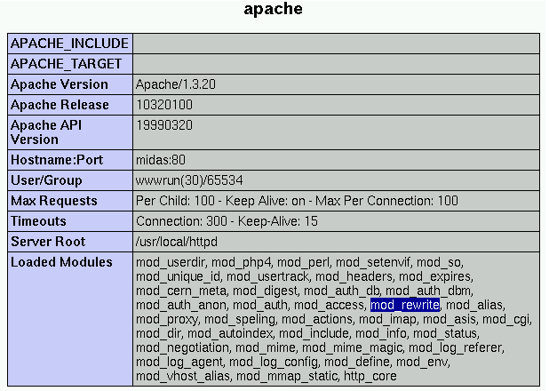

25.2. mod_rewrite
You will probably find mod_rewrite already installed by your ISP on your web server. This module uses a rule-based rewriting engine (based on a regular-expression parser) to rewrite requested URLs on the fly. It supports an unlimited number of rules and an unlimited number of attached rule conditions for each rule to provide a really flexible and powerful URL manipulation mechanism. The URL manipulations can depend on various tests, for instance server variables, environment variables, HTTP headers, time stamps and even external database lookups in various formats can be used to achieve a really granular URL matching (see the Apache Documentation of mod_rewrite).
 | Find out if you have mod_rewrite installed first! | |
|---|---|---|
There is little meaning in trying to implement an URL manipulation solution, if your ISP has not installed mod_rewrite on your web server - so you better find out before you start. The easiest way is to call your ISP and ask. If this appears to be more time consuming than you thought, you can also find it out yourself if you save the following 3-liner
in a file called test.php, then upload it to you web server and open it with your browser. It will display a wealth of information about your PHP configuration (that's why you should delete it, or at least restrict access to it by putting it in a .htaccess password protected directory, when you are done). Among others, you will see a section called “apache”. Search for “mod_rewrite” in the “Loaded Modules” part. If you find it, mod_rewrite is up and running on your web server. |
Figure 25-1. Apache section of the phpinfo() output: mod_rewrite is loaded.

Apache section of the phpinfo() output: mod_rewrite is loaded.
The internal processing of this module is very complex but needs to be explained once even to the average user to avoid common mistakes and to let you exploit its full functionality. For this we use the Apache Documentation of mod_rewrite. Of course, there is little point in reproducing it here in whole, so you are referred to it for all the gory details.
Here we will cover:
The mod_rewrite API phases (Section 25.2.1),
The mod_rewrite ruleset processing (Section 25.2.2),
Quoting special characters (Section 25.2.3),
Regex backreference availability (Section 25.2.4).
25.2.1. API phases
First you have to understand that when Apache processes a HTTP request it does this in phases. A hook for each of these phases is provided by the Apache API. Mod_rewrite uses two of these hooks: the URL-to-filename translation hook which is used after the HTTP request has been read but before any authorization starts and the Fixup hook which is triggered after the authorization phases and after the per-directory config files (.htaccess) have been read, but before the content handler is activated.
So, after a request comes in and Apache has determined the corresponding server (or virtual server) the rewriting engine starts processing of all mod_rewrite directives from the per-server configuration in the URL-to-filename phase. A few steps later when the final data directories are found, the per-directory configuration directives of mod_rewrite are triggered in the Fixup phase. In both situations mod_rewrite rewrites URLs either to new URLs or to filenames, although there is no obvious distinction between them. This is a usage of the API which was not intended to be this way when the API was designed, but as of Apache 1.x this is the only way mod_rewrite can operate. To make this point more clear remember the following two points:
Although mod_rewrite rewrites URLs to URLs, URLs to filenames and even filenames to filenames, the API currently provides only a URL-to-filename hook. In Apache 2.0 the two missing hooks will be added to make the processing more clear. But this point has no drawbacks for the user, it is just a fact which should be remembered: Apache does more in the URL-to-filename hook than the API intends for it.
Unbelievably mod_rewrite provides URL manipulations in per-directory context, i.e., within .htaccess files, although these are reached a very long time after the URLs have been translated to filenames. It has to be this way because .htaccess files live in the filesystem, so processing has already reached this stage. In other words: According to the API phases at this time it is too late for any URL manipulations. To overcome this chicken and egg problem mod_rewrite uses a trick: When you manipulate a URL/filename in per-directory context mod_rewrite first rewrites the filename back to its corresponding URL (which is usually impossible, but see the Re writeBase directive below for the trick to achieve this) and then initiates a new internal sub-request with the new URL. This restarts processing of the API phases.
Again mod_rewrite tries hard to make this complicated step totally transparent to the user, but you should remember here: While URL manipulations in per-server context are really fast and efficient, per-directory rewrites are slow and inefficient due to this chicken and egg problem. But on the other hand this is the only way mod_rewrite can provide (locally restricted) URL manipulations to the average user.
Don't forget these two points!
25.2.2. Ruleset processing
Now when mod_rewrite is triggered in these two API phases, it reads the configured rulesets from its configuration structure (which itself was either created on start up for per-server context or during the directory walk of the Apache kernel for per-directory context). Then the URL rewriting engine is started with the contained ruleset (one or more rules together with their conditions). The operation of the URL rewriting engine itself is exactly the same for both configuration contexts. Only the final result processing is different.
The order of rules in the ruleset is important because the rewriting engine processes them in a special (and not very obvious) order. The rule is this: The rewriting engine loops through the ruleset rule by rule (RewriteRule directives) and when a particular rule matches it optionally loops through existing corresponding conditions (RewriteCond directives). For historical reasons the conditions are given first, and so the control flow is a little bit long-winded. See Figure 25-2 for more details.
Figure 25-2. mod_rewrite: The control flow through the rewriting ruleset

mod_rewrite: The control flow through the rewriting ruleset
As you can see, first the URL is matched against the Pattern of each rule. When it fails mod_rewrite immediately stops processing this rule and continues with the next rule. If the Pattern matches, mod_rewrite looks for corresponding rule conditions. If none are present, it just substitutes the URL with a new value which is constructed from the string Substitution and goes on with its rule-looping. But if conditions exist, it starts an inner loop for processing them in the order that they are listed. For conditions the logic is different: we don't match a pattern against the current URL. Instead we first create a string TestString by expanding variables, back-references, map lookups, etc. and then we try to match CondPattern against it. If the pattern doesn't match, the complete set of conditions and the corresponding rule fails. If the pattern matches, then the next condition is processed until no more conditions are available. If all conditions match, processing is continued with the substitution of the URL with Substitution.
25.2.3. Quoting special characters
As of Apache 1.3.20, special characters in TestString and Substitution strings can be escaped (that is, treated as normal characters without their usual special meaning) by prefixing them with a slosh ('\') character. In other words, you can include an actual dollar-sign character in a Substitution string by using '\$'; this keeps mod_rewrite from trying to treat it as a backreference.
25.2.4. Regex backreference availability
One important thing here has to be remembered: Whenever you use parentheses in Pattern or in one of the CondPattern, back-references are internally created which can be used with the strings $N and %N (see Section 25.3). These are available for creating the strings Substitution and TestString. Figure 25-3 shows to which locations the backreferences are transfered for expansion.
Figure 25-3. mod_rewrite: The back-reference flow through a rule.

mod_rewrite: The back-reference flow through a rule.
We know this was a crash course on mod_rewrite's internal processing. But you will benefit from this knowledge when reading the following. mod_rewrite's behaviour can be controlled with numerous directives, they are all described in the Apache Documentation of mod_rewrite. Further, real world examples of mod_rewrite use are presented in the Apache URL Rewriting Guide.
But besides the directives available for mod_rewrite, you will also need a grasp of regular expressions (Section 25.3) and the .htaccess file (Section 25.4) to understand the solution for a search engine friendly PHP-Nuke site that we will present later on, in Section 25.5.
Not so fast! “Regular expression?” Right. If you've used "wildcards" with MS-DOS or Windows, somefile.* or some?.exe for example, you already understand the concept. But regex (regular expressions) are much more powerful. And complex. Read on!